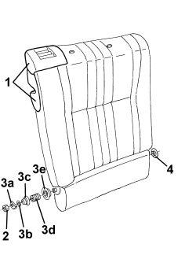
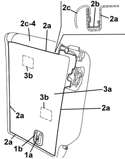
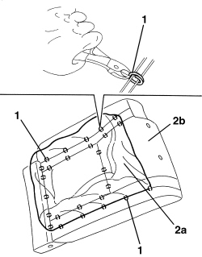
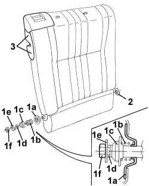

7050D37 RIGHT REAR SEAT BACKREST COVER (SINGLE) - R.R. WITH BACKREST REMOVED
- Path
- Procedures > 70 FITTINGS > 7050 REAR SEATS > 7050D REAR SEAT TRIM/PADDING > 7050D37 RIGHT REAR SEAT BACKREST COVER (SINGLE) - R.R. WITH BACKREST REMOVED
- Kind
- repair procedure (removal / refitting; the operation number is the code)
- Applies to
- all engines; all production periods
- Interactive page
- https://sloeber94.github.io/elrnDB-aBrrSpdr/en/#/946004191
Applies to: all engines; all production periods
 Removing
Removing
 Refitting
RefittingOp. 7050B12 REAR SEAT HEAD RESTRAINT - R.R.
- Remove the armrest bushes.
Op. 7050B08 GUIDE BUSH FOR HEAD RESTRAINT (ONE) FOR REAR SEAT - R.R
1. Remove the trims for the release lever, releasing the inner retainers.
2. Undo the nut.
3. Keep the attachment plate (3a), the washer (3b), the washer (3c), the spring (3d) and the trim (3e).
4. Remove the surround.

Applies to: all engines; all production periods
1. Working at the rear of the backrest, undo the bolt (1a) and remove the retainer (1b).
2. Using a screwdriver along the entire perimeter (2a) of the backrest, release the cover (2c) retaining profiles (2b).
3. Remove the rear trim (3a) releasing the velcro retainers (3b).
4. Remove the backrest cover with padding from the backrest frame.

Applies to: all engines; all production periods
- If necessary, separate the backrest trim from the padding as described below.
1. Use cutters to cut all the front backrest front retainers.
2. Separate the backrest trim (2a) from the padding (2b).

Applies to: all engines; all production periods
Refitting
Removing- Check that the backrest trim is not damaged.
- If separated, position the backrest trim on the padding and crimp the retainers using special pliers.
- Fit the trim on the padding along the entire perimeter of the backrest.
- Position the backrest cover with padding on the backrest frame.
- Position the rear cover and attach the velcro retainers.
- Attach the cover retaining profiles along the entire perimeter.
- Position the retainer and tighten the bolt.
1. Refit the trim (1a), the spring (1b), the washer (1c), the washer (1d), the attachment plate (1e) and tighten the nut (1f) to the end of travel position.
2. Place the trim in position.
3. Fit the trims for the release lever in position and attach the inner retainers.

Applies to: all engines; all production periods
Op. 7050B08 GUIDE BUSH FOR HEAD RESTRAINT (ONE) FOR REAR SEAT - R.R
Topics linked from this page (2)
- 7050B08 GUIDE BUSH FOR HEAD RESTRAINT (ONE) FOR REAR SEAT - R.R
- 7050B12 REAR SEAT HEAD RESTRAINT - R.R.